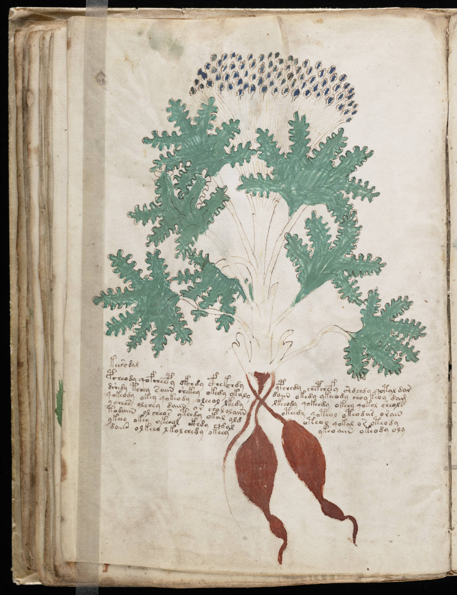

f41v
1keerodal2pcheody qofcheepy ofchdy cfhekchdyypchedy chepchefy shdchdy qotal dar3dshedy tchey s aiin shekey okedy okalydaiin okedy ykeeody choy keoy dam4qokeody okey qokeody oleeol lkedylkeeody qokeedy okeey qokol sheols5ycheos olchey daiin or chol ol aiinoteedy qoteol oteodar orain6todaiin ol cheos yteedy okal oldoteol qokal or oteody7ykeey okey ykeeol ckhdy chdalykeo aiin okeody oly8daiin olkeeo lkol chedy okeey
